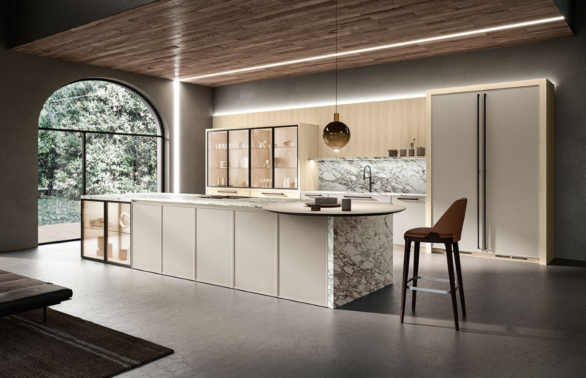
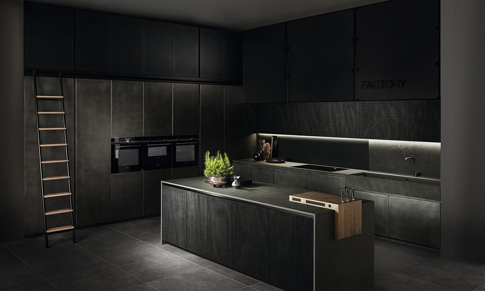
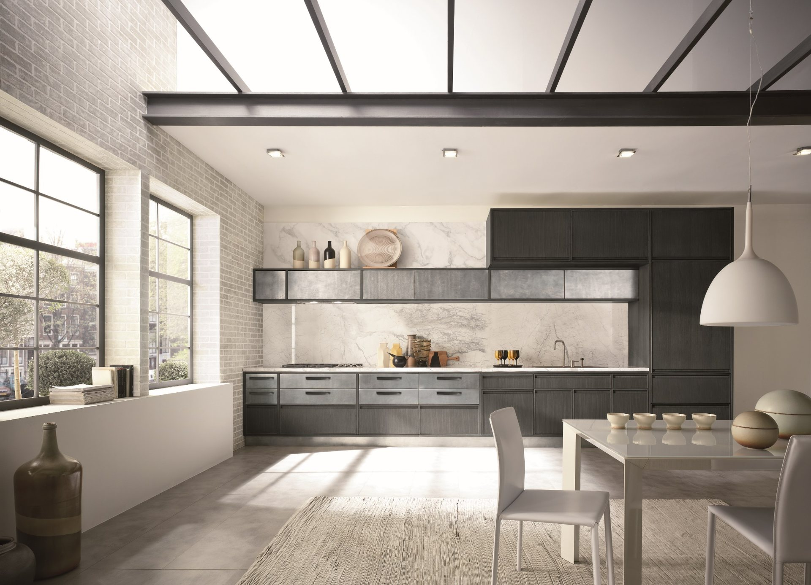

Коллекции
Кухни Aster Cucine
Итальянские кухни на заказ. В подборке HOMEART — четыре коллекции: от лаконичных шпонированных фасадов и индустриальных фактур до классических филёнок и витрин.

Quintessence
Современная кухня со шпонированными фасадами, матовым и глянцевым лаком.

Factory
Кухня в индустриальном стиле с тёмными фактурными фасадами и открытыми деталями.

Timeline
Кухня с фасадами, утопленными в рамку корпуса. Разработана вместе с бюро Workshop/APD.

Opera
Классическая кухня с филёнчатыми фасадами, декоративными профилями и витринами.
Обсудить проект кухни
Подберём конфигурацию и отделки для Вашего проекта.